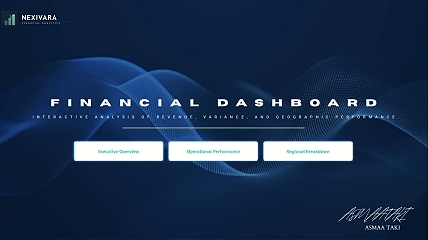
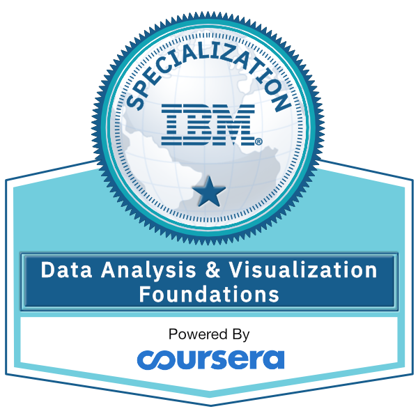

BI & Dashboards
Building executive dashboards, KPI reports, drill-through pages, variance views, and performance summaries that make insights easy to act on.
I build end-to-end data solutions that turn complex information into clear business decisions.
I’m Asmaa Taki, a trilingual Business Analyst and BI Engineer based in Maryland, USA. I am a Summa Cum Laude graduate with a B.A. in Business Administration, Management Information Systems, and a minor in Political Science from the University of Maine at Presque Isle.
My work sits at the intersection of business analysis, data engineering, dashboard development, and stakeholder communication. I build analytics solutions using Microsoft Fabric, Power BI, DAX, SQL, Python, Excel, and Power Query, with experience across live events, financial performance analytics, marketing funnel analysis, and embassy communications.
A practical toolkit across BI engineering, analytics, reporting, and business communication.
Building executive dashboards, KPI reports, drill-through pages, variance views, and performance summaries that make insights easy to act on.
Cleaning, structuring, modeling, and validating datasets for analysis, including SQL extraction, PostgreSQL work, star schema modeling, and Fabric workflows.
Using market research, demographic analysis, stakeholder communication, and reporting to support planning priorities and business decisions.
Selected analytics projects built around financial performance, funnel optimization, and executive decision-making.

Built an end-to-end analytics pipeline processing 100,000+ rows in PostgreSQL, cleaned and transformed through a 9-step Power Query process, and modeled as a star schema across 5 tables. Delivered a 4-page executive dashboard tracking $92M revenue vs. $87M budget across 6 categories, 5 countries, and 5 years.
Modeled 5 tables and engineered 25+ DAX measures including MQL Rate, Avg CAC, Avg CLTV, Churn Rate, Net MRR, and CLTV:CAC Ratio. Built a 5-page dashboard tracking 505K leads across 11 channels and $26.29M in ad spend.
Analyzed Morocco’s live-event market to guide decisions on target demographics, audience demand, and event positioning. Used Excel, SQL, and Power BI to structure research inputs and visualize market and demographic insights.
Verified credentials across Microsoft Fabric, Power BI, Google Data Analytics, Google Project Management, and IBM data visualization.
Microsoft Certified: Power BI Data Analyst Associate. Issued February 2026 and valid through February 2027.
Microsoft Certified: Fabric Analytics Engineer Associate. Issued April 2026 and valid through April 2027.
Google Data Analytics Professional Certificate, issued October 2024.
Google Project Management Certificate, strengthening project planning, execution, stakeholder communication, and delivery skills.

IBM Data Analysis and Visualization Foundations Specialization, issued October 2024.
A business-first analytics background shaped by live events, financial reporting, marketing, and embassy communications.
Supported concert planning by analyzing Morocco’s live-event market, structuring event research in Excel, writing SQL queries, and building Power BI dashboards to visualize demographic insights and market trends for stakeholder decision-making.
Produced social media and event-based content for YouTube, Facebook, and Instagram using CapCut, Canva, and Adobe Photoshop. Received the Best SNS Supporter recognition and Certificate of Excellence.
Prepared sponsor lists, organized contact information, tracked communications and follow-ups, assisted with proposal materials, and supported timelines, task tracking, and stakeholder updates.
Graduated Summa Cum Laude with a 3.98 GPA, concentration in Management Information Systems, and a minor in Political Science.
Have a data, dashboard, reporting, or analytics project in mind? I’d love to connect and discuss how I can help turn information into clear business insight.